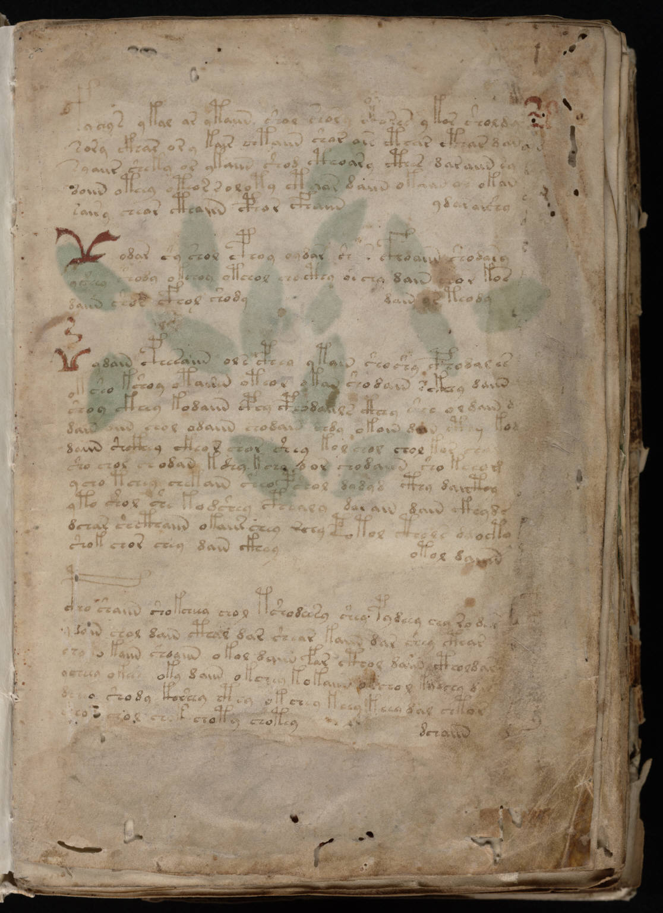

f1r
1fachys ykal ar ataiin shol shory cthres y kor sholdy2sory ckhar or y kair chtaiin shar are cthar cthar dan3syaiir sheky or ykaiin shod cthoary cthes daraiin sa4ooiin oteey oteos roloty cth*ar daiin otaiin or okan5dair y chear cthaiin cphar cfhaiin6ydaraishy7* odar o y shol cphoy oydar sh s cfhoaiin shodary8yshey shody okchoy otchol chocthy oschy dain chor kos9daiin shos cfhol shody10dain os teody11* ydain cphesaiin ol s cphey ytain shoshy cphodales12oksho kshoy otairin oteol okan shodain sckhey daiin13shoy ckhey kodaiin cphy cphodaiils cthey she oldain d14dain oiin chol odaiin chodain chdy okain dan cthy kod15daiin shckhey ckeor chor shey kol chol chol kor chal16sho chol shodan kshy kchy dor chodaiin sho kchom17ycho tchey chokain sheo pshol dydyd cthy daicthy18yto shol she kodshey cphealy dasain dain ckhyds19dchar shcthaiin okaiir chey rchy potol cthols dlocta20shok chor chey dain ckhey21otol daiiin22cpho shaiin shokcheey chol tshodeesy shey pydeey chy ro d*23*doin chol dain cthal dar shear kaiin dar shey cthar24cho*o kaiin shoaiin okol daiin far cthol daiin ctholdar25ycheey okay oky daiin okchey kokaiin **chol k**chy dal26d*eeo shody koshey cthy okchey keey keey dal chtor27*eo chol chok choty chotey28dchaiin
